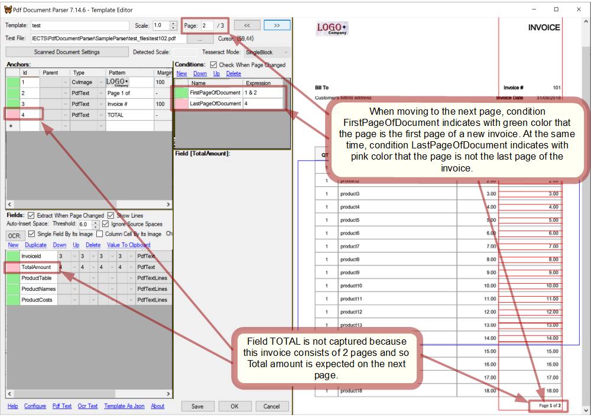

Overview
PdfDocumentParser is a parsing engine intended to extract of text/images from PDF documents that conform to a recognizable graphic layout - such as invoices and the like. The main parsing approach is based on finding certain text or image fragments in page and then extracting text/images located relatively to those fragments.
Within this scope PdfDocumentParser is capable of the following:
- operating with text represented by PDF entities (meant for native PDF files);
- processing OCR'ed text (meant for scanned PDF files);
- image search/comparison/extraction (meant for either native or scanned PDF files);
PdfDocumentParser was designed to be incorporated into custom applications hopefully without need of change.
PdfDocumentParser API consists of:
- Template Editor where parsing templates can be created or debugged in an easy manner;
- Parsing API that allows custom applications to parse PDF files in a custom manner with little effort required;
PdfDocumentParser is a .NET DLL.
Template
To parse documents that comply with a certain layout (e.g. invoices issued by the same company) a parsing template is to be configured. It contains information what data should be extracted and how.
Obviously, applying a template to documents with layout different from that it was designed for, would bring to incorrect parsing.
Configuring a template is done by Template Editor
Anchor
An anchor is a fragment of either text or image extracted from a test PDF page in order to be looked for on any PDF page when needed afterwards. An anchor can be used in the following ways:
- can be linked by fields;
- can be engaged in conditions;
- can be linked by anchors;
Being used does not impose any restriction to an anchor. Thus, an anchor can be used in many ways at the same time.
General structure of anchor
An anchor consists of a single or many elements of the same type where the first element is 'master' and the rest are 'secondary'. Position of the master element is considered the position of the anchor itself. Secondary elements are searched in relation to the master element's position.
If some of an anchor's elements is not found, the anchor itself is set not found too.
The rectangle where an anchor was located on the page while creating, is named 'initial rectangle' and contains all the anchor's elements.
Anchor linked to anchor
A linked anchor is named 'child' of the linking one which is named 'parent'.
When an anchor is linked to another anchor, its search area (when it is not the entire page) becomes related to its parent anchor's position.
When a parent anchor is not found, its child anchors are set not found too.
Number of anchors linked successively in a chain can be any.
Anchor types
Each of types is processed by its own very different way therefore choosing the right type is crucial in successful and robust parsing.
When using OcrText and ImageData types, be acquainted with scanned document treatment.
PdfText
This type is based on native text presentation inside a PDF file. Elements of this type are character boxes extracted from PDF entities which together present a text to be found in page. Every character is a separate anchor element.
It should be used whenever possible because it is most robust and fast.
| Parameter | Description |
|---|---|
| Position deviation | It allows to loose bonds between master element and secondary elements in a anchor when for some reason they can shift relatively to each other. It is measured in pixels and must be a positive float number, non-zero even for identical documents because of discrepancy reasoned by internal image re-scaling. |
| Position deviation is absolute | If set then position of each element is compared to the master element's position, otherwise, with the previous element's position. It makes no sense if the anchor contains no secondary element. | Search rectangle margin | When set, area where the anchor is looked for is the entire page. Otherwise, the searched area is restricted by Search rectangle margin that specifies a rectangular area around the anchor's initial rectangle. It is measured in pixels. It should be set only when it is known that the anchor is always belongs to a certain part of page. It helps to avoid undesired matching and speed up processing. |
OcrText
This type works similarly to PdfText type except that difference that character boxes are provided by OCR engine instead of native PDF entities.
It should be used only when PdfText type does not work which happens on scanned or mixed documents. It cannot not give 100% accuracy like PdfText type does and will acceptably work only for images with resolution not less than 300dpi. Also, its perfomance is slower than that of PdfText type.
| Parameter | Description |
|---|---|
| Position deviation | See PdfText. |
| Position deviation is absolute | See PdfText. | Search rectangle margin | See PdfText. |
| OCR entire page | NOTE: This switch can completely change parsing. It is because OCR by Tesseract of a larger image and a smaller fragment can give different recognition of the same text.
Which is better? OCR of entire page gives sometimes more correct results, sometimes otherwise. But it always takes considerably longer time than OCR of a smaller fragment defined by Search rectangle margin. This switch makes sense only if Search rectangle margin is set, otherwise the entire page is OCR'ed anyway. |
ImageData
Elements of this type are images which are fragments of page selected while creating an anchor.
This type should be used when anchoring to images, not to text, is required. Its perfomance is slower than that of PdfText type. Also, it may not provide 100% accuracy on scanned documents if they have essential discrepancy in size, contrast, brightness, orientation etc. In such cases, OcrText type may work better.
NOTE: even when an image fragment is sought within the same page where it was extracted from, it cannot be found without a non-zero tolerance. It happens because the search hash is produced after downsizing an image and thus pixel interpolation while restoring to the initial size gives different results for an entire image and for its fragment.
| Parameter | Description |
|---|---|
| Position deviation | See PdfText. |
| Position deviation is absolute | See PdfText. | Search rectangle margin | See PdfText. It reduces search time and helps to avoid undesired matching. |
| Brightness tolerance | While for native PDF documents it can be 0.1 - 0.2, scanned documents which have brightness discrepancy may need it higher. A higher tolerance brings to a less certain result. |
| Different pixel number tolerance | While for native PDF documents it can be 0.1 - 0.2, scanned documents which have brightness discrepancy may need it higher. A higher tolerance brings to a less certain result. |
| Find best match | If set, looks for the match with the least difference, otherwise returns the first match within the tolerance specified. |
Create anchor
How to create anchors, see in the tutorial.
Condition
A condition is a boolean expression that depends on anchors and is set individually in every template.
The meaning of a condition can be True or False and depends on pair [PDF page, template]. It can be checked by PdfDocumentParser API method IsCondition(.
Conditions are identified by their names. The condition collection is dictated by the logic of a custom application, therefore condition names are predetermined within the application's scope and are the same for all templates that belong to it.
Mostly expected condition
While the condition collection depends on custom application, the following one is unavoidable in any application that operates with more than one template: "is this template appropriate for this page"?
Depending on parsing task, this condition may include additional checks.
Boolean expression
Condition expressions are composed of the following symbols: <anchor id>, '!', '&', '|', '(', ')'. When an anchor referenced by <anchor id> is found then it is treated as True, otherwise False. The meaning of a condition is the boolean result of its expression.NOTE: Operands '&' and '|' are processed successively, therefore, for instance, "1 | 2 & 3" and "2 & 3 | 1" are not equivalent. Parentheses should be used to manage precedence of operations.
Sample expressions:
| Expression | Description |
|---|---|
| 1 | The simplest expression which is True when anchor #1 is found. |
| (1 | 7 | 8) & 2 | An expression of this kind is useful for instance when a company uses different logos for documents of the same structure. In such a case, instead of creating several separate templates, a single template can be set to accept more than 1 logo image. Respectively anchors #1,7 and 8 are targeted to the expected logos. | !2 | (2 & 3) | This expression could be used for instance for a decision whether a certain field should be parsed or passed off. |
Set condition
How to set conditions, see in the tutorial.
Field
A field defines certain text or image that is to be extracted from a PDF page.
Fields are identified by their names. The field collection is dictated by the logic of a custom application and thus their names are predetermined within its scope and are the same for all templates that belong to it.
Anchoring
A field optionally can be linked to an anchor.
When a field has no anchor, its selecting rectangle retains the initial position which was its position during creation.
When a field has anchor, PdfDocumentParser locates the field's rectangle depending on its anchor's actual position so that if on some page the anchor shifts, the field shifts together with it.
When it is known definitely about a field that it appears on every page and always keeps the same position then there is no need to link it to an anchor.
In scanned documents whose margins vary, fields cannot have constant positions and so always must be processed with anchors.
It is advisable always to link fields to anchors thus minimizing probability of mistaken parsing.
Field types
When using OcrText and ImageData types, be acquainted with scanned document treatment.
PdfText
Its value is a text surrounded by field's rectangle. It is obtained from PDF entities.OcrText
Its value is a text surrounded by field's rectangle. It is recognized by OCR engine.For native PDF documents this type should never be used. But for scanned documents it is the only way to get text in the digital form which can be recorded in a file or database, indexed, searched and so on.
ImageData
Its value is aSystem.Drawing.Bitmap object that contains a fragment of page surrounded by the field's rectangle.
It is used when image is required rather than text or when OCR is not reliable.
Set field
How to set fields, see in the tutorial.
API
Refer to InvoiceParser as an alive example of using PdfDocumentParser in a custom application.Methods
| Method | Property | Description |
|---|---|
Cliver.PdfDocumentParser.PageCollection::ActiveTemplate |
Set active template in PdfDocumentParser. |
Cliver.PdfDocumentParser.Page::IsCondition() |
Check if a condition is met in page. |
Cliver.PdfDocumentParser.Page::GetValue() |
Extract a field from page. If anchor of the field was not found, NULL is returned. |
Pseudo-code
The main idea of using PdfDocumentParser in a custom application is that custom operations are performed depending on custom conditions.Because of the fact that the collection of conditions is determined by a custom application, it is impossible to outline 'the most common algorithm' of using PdfDocumentParser. But some basic algorithm of processing a PDF file would look like the following:
foreach(page in PdfFile)
{
if(PdfDocumentParser.ActiveTemplate == null)
{
foreach(template in templates)
{
PdfDocumentParser.ActiveTemplate = template;
if(PdfDocumentParser.IsCondition(page, "DocumentFirstPage"))
break;
PdfDocumentParser.ActiveTemplate = null;
}
}
if(PdfDocumentParser.ActiveTemplate != null)
{
if(PdfDocumentParser.IsCondition(page, "Field1Page"))
{
object value1 = PdfDocumentParser.GetValue(page, "field1");
...do something with value1...
}
if(PdfDocumentParser.IsCondition(page, "Field2Page"))
{
object value2 = PdfDocumentParser.GetValue(page, "field2");
...do something with value2...
}
...
if(PdfDocumentParser.IsCondition(page, "DocumentLastPage"))
PdfDocumentParser.ActiveTemplate = null;
}
}
Notice that the above algorithm implies that only one template can be applied to a PDF page while it is not mandatory in general.
Tutorial: custom application
PdfDocumentParser can only be called from within an application developed for a certain parsing task. Therefore, in this tutorial we'll consider a sample task and an application developed for it.
Custom task
The parsing task, that is considered in this tutorial, follows:
There are PDF files that consist of invoices issued by different companies. Values INVOICE#, JOB#, PO#, COST should be parsed from every invoice.
It is known that the PDF files to be parsed comply with the following:
- a file can consist of multiple invoices;
- an invoice can consist of multiple pages;
- any page in a file participates in an invoice;
InvoiceParser is an application developed for this task so it can be referred to while learning this tutorial.
Custom configuration
As is obvious from the task requirements, the field collection predetermined in our application should be: INVOICE#, JOB#, PO#, COST.
Now let's decide which conditions are needed in our applcation.
Because the invoices are issued by different companies and hence have different layouts, there will be needed as many parsing templates as many layouts are. Therefore, our application has to A)recognize which template should be applied to a PDF page.
Additionaly, as invoice can be multi-page, our application has to B)detect the first page of invoice.
(A) and (B) can be joined into one condition. Let's name it 'FirstPageOfDocument'.
When a template has its FirstPageOfDocument satisfied on a PDF page, it must be chosen for processing that page and the next ones until the first page of a new invoice is detected. And when a new invoice starts, the previously captured fields are to be processed and cleaned.
So, the condition collection in our application should consist of only condition FirstPageOfDocument which is sufficient for the task.
Custom algorithm
Now, summing up the said above, the algorithm of processing a PDF file in our application should be the following:
object INVOICE#, JOB#, PO#, COST;
Template currentTemplate;
foreach(page in PdfFile)
{
foreach(template in templates)
{
PdfDocumentParser.ActiveTemplate = template;
if(PdfDocumentParser.IsCondition(page, "DocumentFirstPage"))
{
if(INVOICE# != null)
{
...do something with INVOICE#, JOB#, PO#, COST extracted from the previous invoice...
INVOICE# = null;
}
currentTemplate = PdfDocumentParser.ActiveTemplate;
break;
}
}
if(currentTemplate != null)
{
PdfDocumentParser.ActiveTemplate = currentTemplate;
object INVOICE# = PdfDocumentParser.GetValue(page, "INVOICE#");
object JOB#, = PdfDocumentParser.GetValue(page, "JOB#");
object PO# = PdfDocumentParser.GetValue(page, "PO#");
object COST = PdfDocumentParser.GetValue(page, "COST");
}
}
Refer to InvoiceParser as a real code.
Template Editor
Template Editor is a GUI object that is called in a desktop application whenever configuring a template is required.How to configure a template, see in the tutorial of setting template.
Template Editor API
| Object | Description |
|---|---|
Cliver.PdfDocumentParser.TemplateForm |
.NET Windows Form that provides abilities of editing/debugging a template. Create TemplateForm with a TemplateManager instance as a parameter and call Show() or ShowDialog() on it. |
Cliver.PdfDocumentParser.TemplateManager |
Abstract class that must be defined with custom routines. Passed to TemplateForm() as a parameter. |
Refer to InvoiceParser as a sample of use.
Tutorial: setting template
This tutorial proceeds with the sample considered in the tutorial of custom application.Refer to InvoiceParser as the sample's custom application.
Open Template Editor
The way of opening Template Editor depends on a custom application. In InvoiceParser a template can be created from scratch or copied from an existing one and then modified as needed. Let's start with a blank template: click the blank row in the table in the main window of InvoiceParser and then click button Edit.
Open a test PDF file in Template Editor:

Create anchors
Templates in our custom application have 1 condition and 4 fields (see the configuration).
Let's first create anchors for the condition. As FirstPageOfDocument is intended to identify the type of a document, it needs an anchor targeted to some fragment of a document that is unique to its type. Obviously, such a fragment must identify the document type with a high confidence. Usually the logo of a company that issued the document can serve well this goal.
Create an anchor that captures the logo and thus detects if a page corresponds to the template:

In addition, as FirstPageOfDocument must be capable to detect the beginning page of a document, it needs an anchor that will do it.
Create an anchor that checks if a page is the first page of a document:

Anchors for the fields will be created later.
NOTE: when you select a row in either table: anchors, conditions or fields, its status is updated in the head cell and the captured place is displayed in the page viewer.
NOTE: while setting an anchor, if you keep Ctrl pressed, you can select more than 1 element on a PDF page for the same anchor. In that case, to stop selecting and make the anchor set, you have to release Ctrl before releasing the mouse button.
Specify condition
We already have created anchors #1 and #2 that are needed to specify FirstPageOfDocument's expression. It must be True only when the anchors are found together on a page.Set condition FirstPageOfDocument with boolean expression "1 & 2":

While in this sample FirstPageOfDocument is quite good with 2 anchors, sometimes more anchors may be needed: for instance when the same company issues documents of different types and thus company's logo is not sufficient to detect the type.
If the sample task considered here did not stated that every page belongs to an invoice then one more condition to detect last pages of invoices would be needed. However, in accordance with the requirements, such a condition is redundant.
Set fields
Set field INVOICE#:

In the same way as above set the rest fields and create anchors for them:

Though fields INVOICE#, JOB#, PO# seem not to need linking to anchors, they were anchored just in case to minimize the probability of mistaken parsing in the future when the layout may change.
Check template
When all the conditions and fields are set, it's time to walk through the file and see how the template works on every page.
The page #2 begins a new invoice:

The page #3 continues and ends an invoice: 
The template worked properly on the test file. Click OK to save it.
Scanned documents
Scanned documents are not the first subject for PdfDocumentParser but they are supported. PdfDocumentParser provides auto-deskew and page rotation options which are usually needed for scanned documents.
Because of quality deviations in scanned documents the image comparison tolerance parameters in anchors of ImageData type may need to be tuned for every anchor.
The image resolution in PdfDocumentParser is a resolution with which a PDF page is converted into image to be then passed to the OCR engine. It must be set to not less than 300dpi, otherwise OCR will not work properly. The higher the resolution, the better quality of OCR is. On the other hand, increasing the resolution increases processing time. Also, setting the resolution in PdfDocumentParser higher than the resolution of original images will not make sense. Image resolution parameter is the same within application's scope and can be set in the configuration window invoked from Template Editor.
InvoiceParser
Invoice Parser is a custom desktop application based on PdfDocumentParser. It can be used as an example of incorporating PdfDocumentParser into a custom code. Also, as its custom specificity lays only in a way how PDF files are parsed, the rest code can be used as a framework in a new application.Generally, it does the following:
- enhances
PdfDocumentParser.Templatewith auxiliary properties that are not related to parsing; - stores and manages templates;
- predetermines the condition and field collections;
- defines
PdfDocumentParser.TemplateForm.TemplateManagerand callsPdfDocumentParser.TemplateFormfor template editing; - processes PDF files in accordance with custom needs;

Assumptions
- by default, a PDF file can contain documents of the same type only. However, it can be tuned for every template separately;
- once detected, a document is considered continued until the next document begins or the file ends;
These assumptions is not something deep rooted in the code and can be easily modified.
Custom template parameters
| Parameter | Description |
|---|---|
| Active | Inactive template is ignored while parsing. |
| Group | An optional mark that can be helpful for managing templates. |
| Order | A weight indicating template's order in check line. It is intended to reduce processing time. Templates with the less order are tried first. |
| DTLPage | The last page in PDF files that is to be checked for this template. It is intended to reduce processing time. |
| Filter | It is a Regex applied to PDF file path to recognize the proper template. Optional. It is intended to reduce processing time. |
| Filter | It is a Regex applied to PDF file path to recognize the proper template. Optional. It is intended to reduce processing time. |
| SFTRegex | It is a Regex that matches to names of templates that can share the same PDF file. By default it is NULL meaning that such a template if chosen for processing a PDF file cannot be changed for this file. |
Considerations
When processing documents InvoiceParser applies every active template to every new document to recognize a proper template. So, if you have 50 templates and 1000 files evenly distributed for templates, InvoiceParser will do on average 1000/2 *50 = 25,000 template tries. It may take a considerable time especially when templates use OCR. Processing time can be reduced by the following ways:
- specify file filters for templates. If it can be done then the other tips are not needed;
- specify template orders so that templates that require a longer time for recognition have a higher order. E.g. templates that use auto-deskew should be checked in the last place;
- keep templates that are known as not corresponding to the files to be processed right now, inactive;